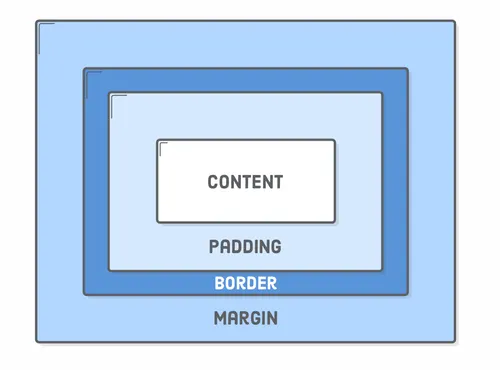

Understanding the CSS Box Model
The CSS Box Model consists of:
- Content: The inner area (text, images)
- Padding: Space between content and border (see the white space around this text)
- Border: Line surrounding the padding (see the left green border here)
- Margin: Space outside the border (separates this box from others)
Notice how each section on this page uses these properties differently!
Costa Rican Wildlife
Costa Rica is a biodiversity hotspot, home to sloths, toucans, and monkeys. Over 25% of its land is protected in national parks.
Costa Rica is renowned for its rich biodiversity, housing over 500,000 species, which represent nearly 5% of the world's estimated species. This makes Costa Rica one of the 20 countries with the highest biodiversity globally.